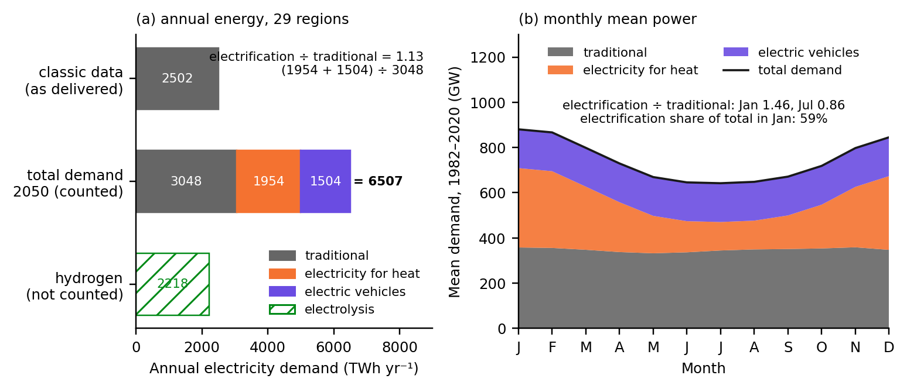
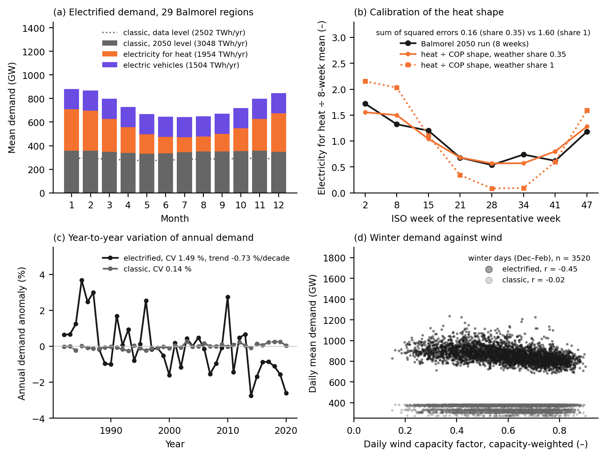

Working page
Data characteristics
1. What the electrification load is
The electricity demand in the DTU data set, classic_demand, contains only conventional consumption: the electricity that households, services and industry already use today. It excludes electric heating, electric vehicles, power-to-X and hydrogen production [Kruse 2023 §4.1]. It is a regression on temperature, weekday, holidays, daylight hours and hour of day, and it is a deterministic central estimate [Kruse 2023 §6.1.2].
The electrification load is the energy use that is met by fuels today (gas, oil, petrol, diesel) and that a decarbonised scenario moves onto electricity. It becomes new electricity consumption:
- Electricity for heat: the electricity that heat pumps and electric boilers use for building and district heating. Heat-pump electricity = heat supplied ÷ coefficient of performance (COP). Heat demand is high in winter and the COP is low in winter (air-source heat pumps: about 3.1 in January, 4.8 in July), so both raise winter consumption.
- Electric vehicles: transport fuel replaced by electricity. It varies by only 1.5% across the 8 representative weeks of the Balmorel results, so it is taken as constant here.
- Hydrogen (electrolysis): 2218 TWh yr⁻¹ in the Balmorel results. Electrolysers run flexibly with the electricity price, so this load is not counted in the demand here.
Why it exists: in a 2050 net-zero scenario, heating and transport fuels are replaced by electricity. This consumption is absent from today's measured load, and therefore also from the classic regression model (fitted to ENTSO-E load of 2015–2018). Its annual amounts come from an energy-system model (Balmorel MainResults.gdx in Shubham's working copy, model year 2050). Its hourly shapes come from the heat-demand profiles and COP series of the same DTU collection.
2. The electrification load also consumes electricity: total demand = conventional + electrification load
Yes. Electricity for heat and electric vehicles both draw power from the grid. Added to the conventional demand they form the demand the system must serve; residual load and unserved energy are computed from total demand (data-understanding page, Section 8b).
total demand(t) = conventional(t) + electricity for heat(t) + electric vehicles(t) conventional(t) = classic profile(t) × Balmorel conventional annual energy ÷ classic annual energy (per region) electricity for heat(t) = Balmorel electricity-for-heat annual energy × shape(t) ÷ 39-year mean of shape shape(t) = [ 0.35 × heating profile(t) ÷ mean heating profile + 0.65 ] ÷ COP(t) electric vehicles(t) = Balmorel EV annual energy ÷ 8766 h residual load(t) = total demand(t) − wind(t) − PV(t) − run-of-river inflow(t)
Here the classic profile only gives the shape of conventional demand: its annual energy of 2502 TWh is scaled to the Balmorel 2050 conventional demand of 3048 TWh (factor 1.22). The temperature-dependent share of 0.35 was obtained by matching the shape to the electricity-for-heat use in the model's 8 representative weeks (data-understanding page, Fig. 10b).
3. Which is larger

4. Which demand Nayak et al. (2026) use
| Component | Nayak et al. 2026 | This page (data-understanding page, Section 8b) |
|---|---|---|
| Conventional | Classic demand, exogenous, derived from ERA5 temperature (Kruse 2023) [Nayak §2.1.2] | Classic shape × Balmorel 2050 annual energy |
| Electricity for heat | Heat demand exogenous (degree-day profiles scaled to the annual heat demand of the Balmorel scenario); supplied by heat pumps, CHP, boilers and heat storage optimised in the model, so heat-pump and electric-boiler electricity is a model result; COP varies with temperature [Nayak §2.1.2, §3] | Annual amount from the Balmorel results; shape = heating profile ÷ COP (share 0.35, calibrated); no heat storage or CHP flexibility |
| Electric vehicles, hydrogen | Endogenous consumption categories in the model results (category names ENDO_EV and ENDO_H2 in MainResults.gdx; not described in the paper text) | EVs constant; hydrogen not counted |
| Representative days and scaling | Representative days chosen by a fixed calendar (8 weeks × Thursday to Saturday), not selected from demand; after selection all weather-dependent inputs, including classic demand, are quantile-mapped [Nayak §2.2, §3] | No representative days; all 39 years of hourly data |
Nayak's total demand is therefore also "conventional + electrification load", but there the electrification load is an optimisation result that heat storage, CHP and flexible electrolysis can shift in time, whereas on this page it is a fixed profile. This is one of the main reasons why the unserved energy here (40.7 TWh yr⁻¹ on average) is far above the paper's (about 5 TWh in the worst year, read from the paper's Fig. 8) [inference].
5. Why this matters for the study
- The sources of variance change. With classic demand only, 76% of the variance of daily demand comes from the weekday effect, 18% from the season and 6% from the remainder; with the electrification load, the season explains 77%, the weekday 6% and the remainder 17% (data-understanding page, Fig. 0b).
- Cold days coincide with low wind. Correlation between winter daily demand and wind capacity factor: classic −0.02, total demand −0.45 (n = 3520 days).
- No unserved energy without electrification load. With conventional demand only, the maximum residual load is 257 GW, below the 290 GW of dispatchable capacity, so no hour in 39 years has unserved energy. With the electrification load, 10.3% of hours exceed dispatchable capacity, and the 4 years with the most unserved energy (1985, 2010, 1987, 1996) are the 4 extreme years of Nayak et al.

MainResults.gdx in Shubham's working copy; whether this is the paper's 1995 baseline system is unknown (todo B1). (2) The unit of the classic data is inferred as MW; after scaling it does not affect the results. (3) Leaving hydrogen out of the demand is an assumption of this page.References: Kruse 2023, MSc thesis §4.1, §4.2, §6.1.2 [Chapter 4 and §6.1 read]; Nayak et al. 2026, SSRN preprint [full text]; Nayak, Koivisto, Kanellas 2025, DTU Data doi:10.11583/DTU.c.7964141.